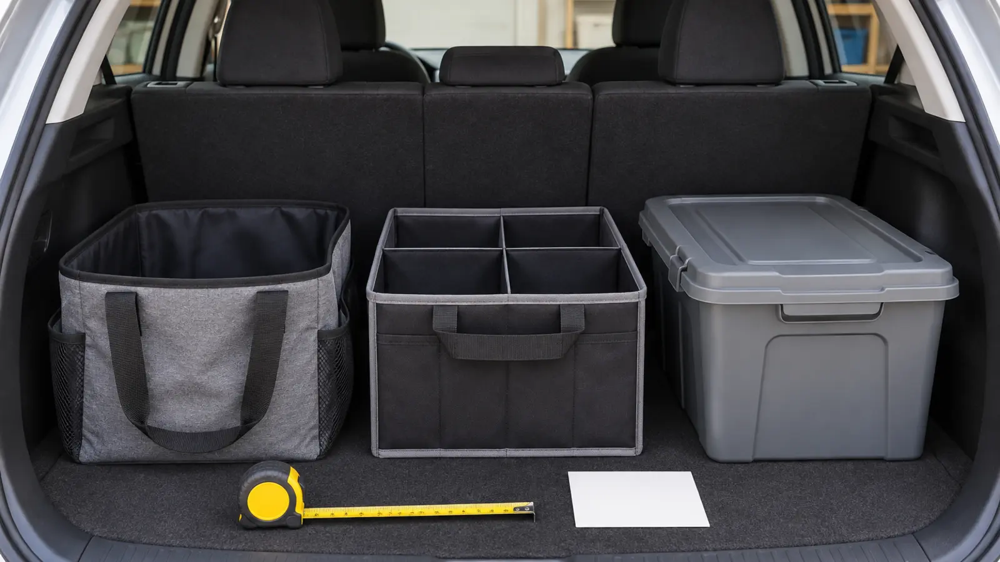

Soft open tote
Best for: coats, towels, reusable bags and quick-transfer gear. It flexes around odd shapes and carries easily. Tradeoff: weak structure, no dust lid and small hard objects can escape. Do not use it as a restraint.
ROAD-TRIP SYSTEM · COMMERCIAL · AUTHORITY-EXPANSION
An organizer is not a crash restraint. Measure the vehicle, preserve emergency access, choose the right container, and secure the load the way the vehicle manual allows.

Commercial disclosure: This guide includes Amazon Associate links to broad organizer categories. If you buy through them, Mr Adventure Dad may earn a commission at no extra cost to you. No item was hands-on tested for this article; links do not imply a rating, stock level, vehicle fit, crash performance or recommendation based on commission.
Buy the container after the car layout, not before. The best family cargo system keeps four things true: the driver can see, the spare tire and emergency kit remain reachable, the container cannot become a projectile, and the family can unload the thing without dumping it on the pavement.
Start with a tape measure, the owner’s manual and the real load. Empty the cargo area. Fold or move seats into the configuration used on an actual trip. Measure width between wheel wells, usable depth, height below the rear sightline and the clearance needed for the hatch. Then identify access panels, third-row hardware, top-tether anchors and manufacturer-approved cargo tie-downs that must remain free.
Do this parked. Do not stage an actual hard stop. Load the organizer as it would travel, close every lid and compartment, and secure cargo exactly as the vehicle and restraint manufacturers direct. Then ask: where would each object go during a sudden stop, sharp turn, pothole or crash?
Never let an aftermarket organizer interfere with a child restraint. Use the booster-seat decision guide for the seating side of the vehicle and follow both the restraint and vehicle manuals.
Arrival zone: the one bag needed first—rain shells, admission confirmation, dry socks or the picnic layer. Road zone: cleanup supplies and sealed snacks that passengers may access only when the vehicle is safely stopped. Emergency zone: first aid, roadside warning equipment and vehicle-specific tools kept accessible but secured.
Put dense items low and forward within the cargo area when the vehicle manual permits. Do not stack above the seatback or parcel cover simply because a bin has a flat lid. Do not place fuel, propane cylinders or other hazardous material into an ordinary family organizer; transport and storage rules are product- and vehicle-specific.
Use these as category research, not a ranked shopping list. Compare current dimensions, materials, care, manufacturer load guidance, warranty and return terms against the measurements above. Product details and availability can change.
In wet weather, use a removable washable liner or a container whose exact material and care instructions support the mess. A lidded bin may contain wet boots, but do not seal damp textiles for days. At home, unload and dry them using the wet-gear entryway system.
The low-energy version is one soft tote for arrival gear and one secured emergency kit. Skip the dividers. For a bigger packing reset, use the family road-trip packing system and the travel-bag decision guide.
Skip when the cargo area is tiny, the family needs full-time third-row access, a mobility device consumes the measured space, or the vehicle manual provides no safe restraint route for the proposed setup. Also skip if the goal is to carry more weight than the vehicle permits. A smaller, secured load beats a tidy overloaded one.
Verified November 2, 2026 against the National Highway Traffic Safety Administration’s “Secure Your Load” guidance. This page provides a selection framework, not vehicle-specific engineering advice. Your current vehicle manual and the instructions for every restraint and organizer control.
MAKE THE WEEK COUNT
Build the plan your family can finish well, then leave enough energy for the next part of the day.
More family plansTHE USEFUL STUFF
These are practical categories to compare—not a reason to overpack. Check fit, specifications and current reviews before buying.
Paid links: As an Amazon Associate I earn from qualifying purchases. You pay no additional cost.
Compare the measured footprint, loaded carry, base, handles, closure and cleaning instructions. A tote organizes gear; it is not a crash restraint.
See current options → COMPARE ON AMAZONCheck open and folded dimensions, divider structure, base, handles, maker load guidance and how the loaded box will be secured through vehicle-approved points.
See current options → COMPARE ON AMAZONVerify outside dimensions, loaded weight, lid security, hatch clearance, emergency access and manufacturer instructions. A flat lid is not permission to stack above the sightline.
See current options →